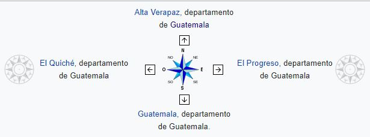
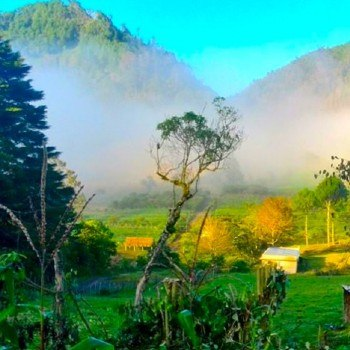

- Ubicación Geografíca de Baja Verpaz:
El departamento de Baja Verapaz se encuentra ubicado en la región norte de la República de Guatemala. Este departamento cuenta con una extensión territorial aproximada de 3,124 km².

- Limites que posee:
Limita al norte con el departamento de Alta Verapaz, al sur con el departamento de Guatemala, al este con el departamento de El Progreso (Guatemala), y al oeste con el departamento de Quiché.
- Su clima: La mejor época para viajar a la región de Baja Verapaz en Guatemala es de enero hasta abril y noviembre y diciembre, donde tienes un clima agradable o clima cálido y poco hasta moderado precipitación. La temperatura máxima promedio en Baja Verapaz es 28°C en abril y de 21°C en enero.El promedio de la cifra climática de Baja Verapaz es de 5,5. Esto se basa en varios factores, como las temperaturas medias, las posibilidades de precipitación y las experiencias climáticas de otros.
